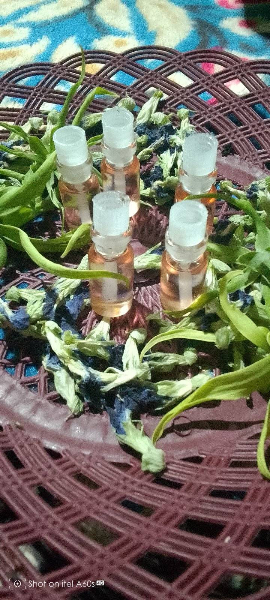
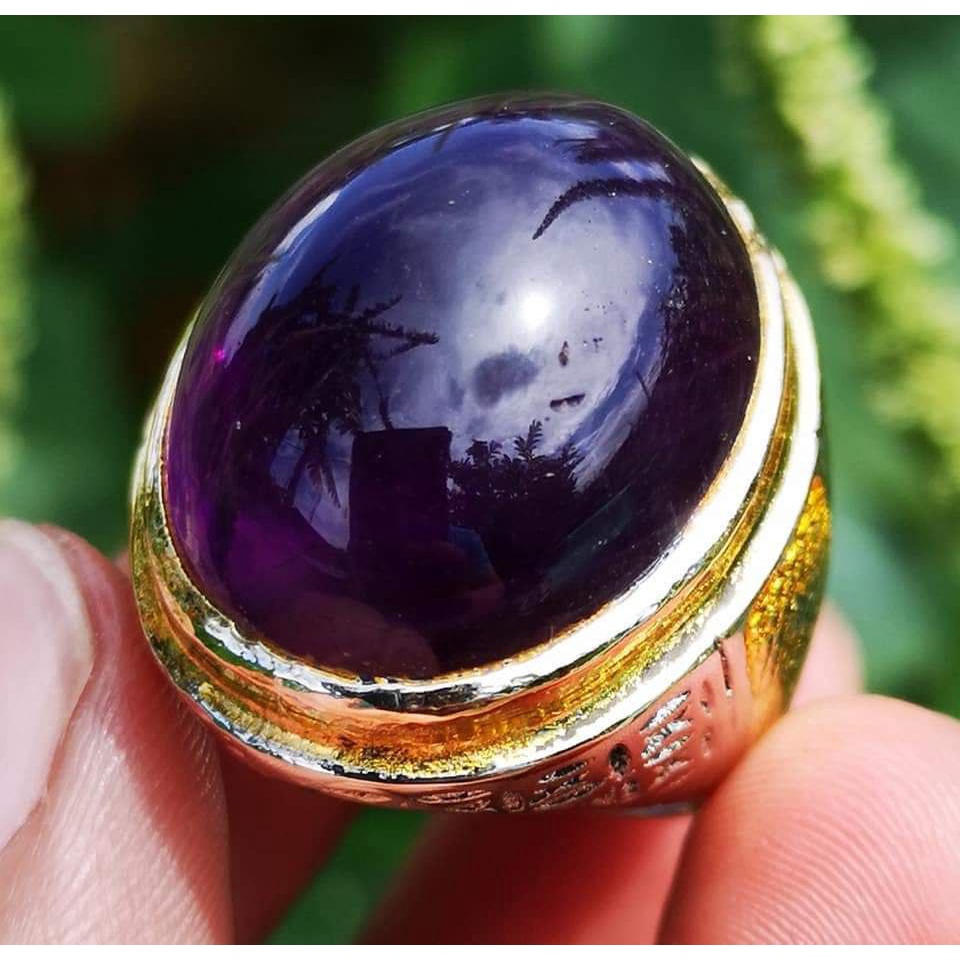
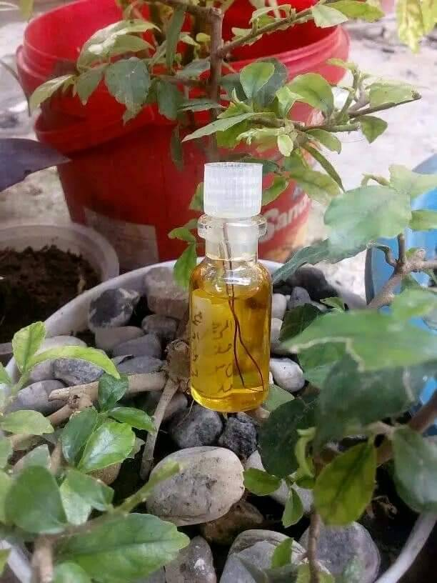
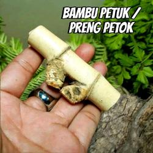
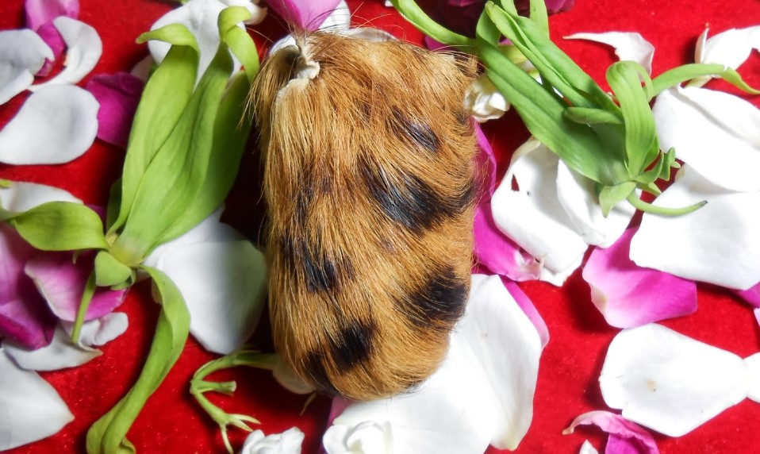
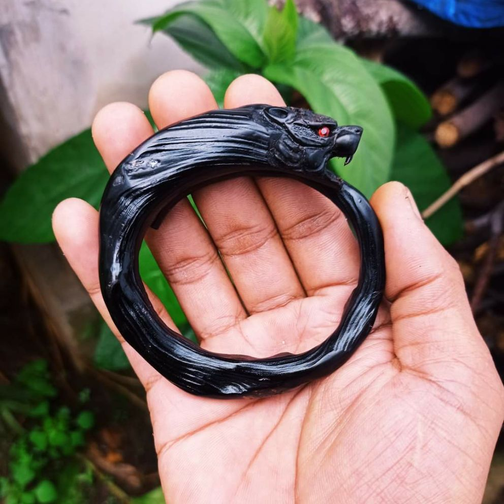

Pusaka & Benda Bertuah
"Koleksi sarana spiritual praktis siap pakai. Telah di-asmak, diselaraskan, dan dikunci energinya oleh Ki Asmoro Jiwo. Klik pada gambar untuk detail khasiat."

Minyak wangi khusus yang diramu dari bibit misik keraton dan telah didoakan dengan ajian Jaran Goyang tingkat tinggi. Khasiat utamanya adalah sebagai media pelet colek dan tatap mata.Sekali dioleskan ke kulit Anda dan aromanya tercium oleh target, getaran energinya akan langsung menusuk ke jantung. Target akan mengalami rindu berat (tergila-gila) layaknya kuda yang sedang birahi. Sangat ampuh untuk menaklukkan pasangan yang sombong, mengunci kesetiaan suami/istri, atau melancarkan perjodohan yang selalu gagal.
Aman digunakan, tanpa efek gila bagi target di masa depan, dan energi minyak ini akan bertahan seumur hidup selama botol penyimpanannya tidak pecah secara sengaja.
">Minyak Pelet Jaran Goyang
Minyak wangi asmak pelet tingkat tinggi untuk memikat lawan jenis secara instan dan mengunci hatinya.
Pesan SekarangSiapapun yang membawa pusaka ini di dalam dompet atau tasnya, akan memancarkan aura 'Semar' yang penuh wibawa, murah senyum, dan sangat dihormati oleh kawan maupun lawan. Sangat ampuh digunakan untuk meluluhkan hati bos/atasan yang galak, memperlancar presentasi bisnis, dan membuat orang yang baru pertama kali bertemu langsung merasa akrab dan percaya 100%.
Pusaka ini tidak memiliki pantangan makanan apapun. Anda cukup mengoleskan minyak perawatan khusus sebulan sekali pada malam jumat legi atau kliwon untuk menjaga kilau energinya.
">Keris Semar Mesem Asli
Pusaka legendaris untuk pengasihan umum, memancarkan wibawa, dan meluluhkan hati bos/pasangan.
Pesan SekarangDalam kondisi sangat terdesak, misalnya dicegat begal, diserang musuh beramai-ramai, atau terjadi kecelakaan tragis, energi sabuk ini akan aktif seketika. Tubuh pemakai akan diselimuti aura keras yang bisa mematahkan senjata tajam lawan, atau membuat musuh terpental tanpa harus disentuh (tenaga dalam defensif).
Perhatian: Khasiat kekebalan fisik HANYA AKAN AKTIF untuk pertahanan diri murni (defensif). Tidak akan berfungsi jika digunakan untuk kesombongan, atraksi pamer, atau niat kejahatan.
">Sabuk Rajah Kulit Macan
Perlindungan fisik dan gaib tingkat tinggi. Menangkal sajam dalam kondisi murni terdesak.
Pesan Sekarang
Batu mustika berwarna ungu pekat yang terbentuk secara alami dan didapatkan melalui proses penarikan gaib. Batu ini adalah 'Raja-nya' sarana pembuka aura dan daya tarik pesona.Dapat dijadikan mata cincin atau liontin. Pancaran energinya akan membersihkan awan hitam (sengkolo) di wajah Anda. Sangat cocok bagi pria atau wanita yang sulit mendapat jodoh, sering ditolak cinta, atau ingin terlihat selalu bercahaya dan awet muda di mata publik.
Energinya sejuk dan menenangkan batin pemakainya. Mampu meredam emosi pasangan yang sedang marah hanya dengan tatapan mata Anda yang teduh.
">Mustika Kecubung Asihan
Batu alam bertuah untuk buka aura, memancarkan inner beauty paripurna, dan melancarkan jodoh.
Pesan SekarangTasbih Kayu Stigi Karomah
Tasbih bertuah untuk ketenangan batin abadi, memperderas rezeki, dan menolak balak santet.
Pesan Sekarang
Di dalam botol minyak wangi ini direndam sepasang Bulu Perindu asli (akar tanaman gaib yang jika terkena air atau asap rokok akan melilit satu sama lain). Media ini adalah rajanya ilmu pengasihan pemikat sukma.Khasiatnya difokuskan pada daya pikat tatap mata dan jabat tangan. Oleskan sedikit di alis atau telapak tangan sebelum menemui orang yang Anda tuju. Sentuhan atau tatapan Anda akan menggetarkan hati mereka, membuat mereka merasa rindu dan nyaman berada di dekat Anda.
Sangat kami rekomendasikan bagi para marketing, *sales*, penyanyi, atau siapapun yang pekerjaannya membutuhkan persetujuan dan simpati dari klien secara cepat.
">Minyak Bulu Perindu
Sarana pelet jabat tangan dan tatapan mata. Sangat cocok untuk negosiator dan pekerja hiburan.
Pesan SekarangCincin Sulaiman Penunduk
Cincin asmak untuk kewibawaan mutlak. Bawahan dan rekan bisnis akan menaruh segan dan tunduk pada Anda.
Pesan Sekarang
Sebuah pusaka yang sangat langka dan banyak diburu oleh konglomerat: Bambu Pethuk (ruas bambu yang tunasnya saling berhadapan). Barang ini asli dari alam, bukan sambungan/lem, dan telah diuji secara spiritual.Energi alaminya merupakan pusaran magnet rezeki skala besar. Khasiat utamanya adalah untuk penglarisan usaha tingkat dewa, memanggil kekayaan dari 4 penjuru angin, serta membentengi pabrik/gudang dari kebangkrutan yang tidak wajar.
Cukup diletakkan di brankas atau tiang utama tempat usaha Anda. Energi bambu ini akan menyedot keberuntungan dan peluang bisnis, membuat usaha yang nyaris mati kembali bangkit dengan omset miliaran. (Stok sangat terbatas, harap tanyakan ketersediaan).
">Bambu Pethuk Puser Bumi
Pusaka alam langka untuk penglarisan skala besar dan penarik kekayaan dari 4 penjuru angin.
Pesan Sekarang
Kantong pusaka kecil yang terbuat dari material khusus berajah, di dalamnya menyimpan rajahan pemanggil uang, mustika kemakmuran, dan wewangian mistis. Ini adalah rahasia para pedagang sukses di pasar tradisional maupun modern.Cara pakainya sangat praktis, cukup disimpan diam-diam di laci tempat Anda menyimpan uang kembalian (laci kasir/brankas). Energinya berfungsi mengikat uang agar 'betah' berada di laci Anda, mencegah kebocoran uang akibat jin pencuri (tuyul), dan menarik sukma pelanggan agar selalu ingin belanja ke toko Anda lagi.
Tidak membutuhkan ritual aneh, cukup ditaruh dan biarkan energinya bekerja otomatis meningkatkan profit harian Anda.
">Kantong Macan Rezeki
Jimat praktis khusus ditaruh di laci uang/kasir agar pelanggan kembali dan menolak tuyul pencuri uang.
Pesan Sekarang
Akar Bahar Hitam adalah tanaman dasar laut dalam yang memiliki daya magis penetralisir racun, baik racun fisik dalam darah maupun racun gaib (ilmu hitam/santet). Akar ini dibentuk menjadi gelang modis yang siap Anda pakai.Oleh Ki Asmoro Jiwo, gelang ini telah di-rajah dan diisi energi karang. Khasiat utamanya sangat cocok bagi kaum pria: menambah keberanian, menguatkan nyali saat berhadapan dengan bahaya, memancarkan aura kejantanan, dan menangkal pengaruh ilmu sihir yang diarahkan kepada pemakainya.
Secara alami, memakai akar bahar juga dipercaya dapat melancarkan peredaran darah, mengurangi asam urat, dan menjaga kebugaran tubuh agar tidak mudah lelah atau kesurupan.
">Gelang Akar Bahar Hitam
Gelang modis untuk penetralisir racun gaib, menangkal santet, dan menambah kejantanan serta nyali.
Pesan Sekarang